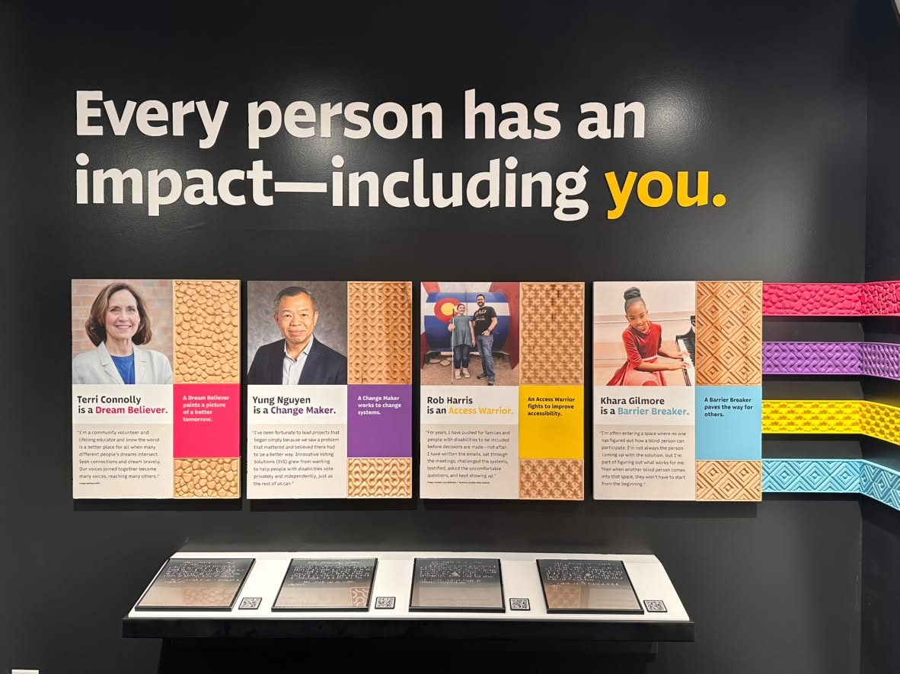
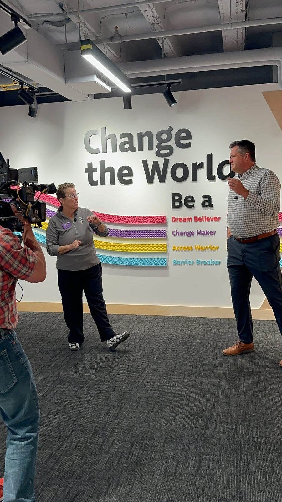

Photo & video albums
Advocacy Through the Years
Our work in photos and video: advocacy, community, and access in practice.
This collection will grow with albums from our work over the years, organized by year and project.
2026
Washington, D.C. — Youth Advocacy

Youth Advocacy in Washington, D.C. | Access, Leadership & Community
Watch the accessible slideshow with narrated photo descriptions and visible captions, or explore the 20-photo album with captions, descriptions, and full-size views.
Watch the accessible slideshow on YouTube
ADVOCACY THROUGH THE YEARS
Access means having a voice.
Featured as an “Access Warrior,” I carry a simple message: families and people with disabilities belong in the room before decisions are made. We keep asking the uncomfortable questions and challenging barriers until access and meaningful participation are part of everyday life.



Read the Access Warrior panel text
Rob Harris is an Access Warrior.
An Access Warrior fights to improve accessibility.
“For years, I have pushed for families and people with disabilities to be included before decisions are made—not after. I have written the emails, sat through the meetings, challenged the systems, testified, asked the uncomfortable questions, and kept showing up.”
Image courtesy Larry Robinson / The Grand Junction Daily Sentinel